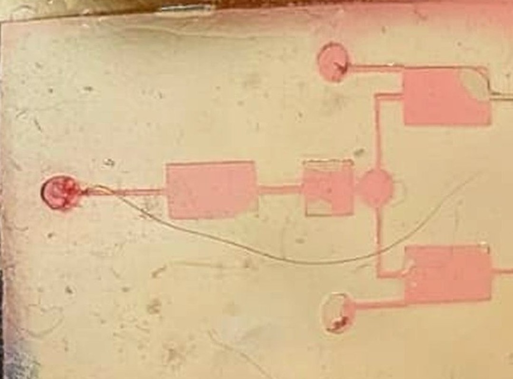
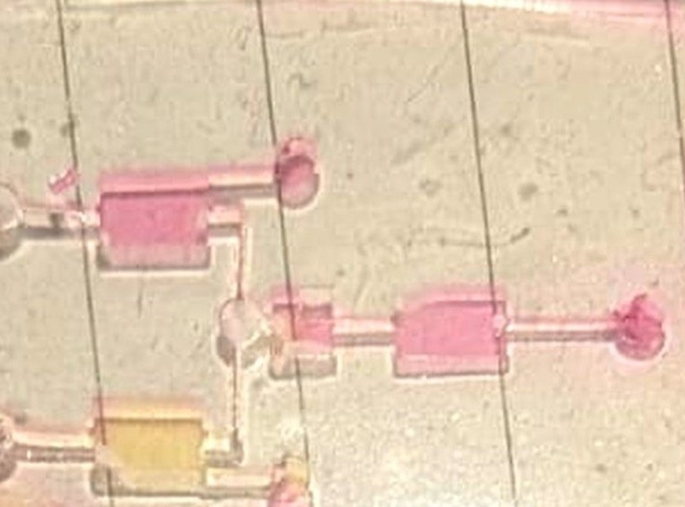

We found no published method that measures both ends of the chain in one cell population.
Sources|TEA-seq 10.7554/eLife.63632·DOGMA-seq 10.1038/s41587-021-00927-2·spatial-Mux-seq 10.1038/s41592-024-02576-0·Paired-Tag 10.1038/s41592-021-01060-3·scMTR-seq 10.1126/sciadv.adu3308·nanoSPLITS 10.1038/s41467-024-54099-z·scMeT-seq 10.1002/advs.202411276·Kang (plant) 10.1073/pnas.2512828122·Vicari 10.1038/s41587-023-01937-y·scSpaMet 10.1038/s41467-023-43917-5·COSIE 10.64898/2026.03.03.709303·RNA ≠ protein: Liu 2016 10.1016/j.cell.2016.03.014·Metabolism as microglial function (Aβ: OXPHOS → glycolysis → tolerant state): Baik 2019 10.1016/j.cmet.2019.06.005. Search not exhaustive.
03The assay
Perturb-seq, except the perturbation is one cell type acting on another.
LimitsProtein and metabolite are lane-level, not single-cell·Demo chip is single-layer and valveless: on-demand valves or contact-only barriers need a different fabrication process·Capsule barcoding of TIP-seq is unpublished
Source|TIP-seq: Bartlett 2021 10.1083/jcb.202103078 (shown for histone marks, RNAPII, CTCF; not yet microglial TFs)·Assay design: project records, unpublished.
04How it is built
A protocol goes in. A printed chip comes out.

Real hardware
Module 1, printed and flooded with food dye: dye fills chambers, channels and ports.

Real hardware
Pink in one chamber, yellow in the next, held apart: the grow-apart baseline.
Digital twin · simulation
Not live hardware. Every design is simulated first; it caught particle settling in a feed line and a narrow retention-gap tolerance before printing.
Status6 chips printed, single-layer and valveless · food dye, not cells · no bench video yet, only these photographs
Source|Bench photographs, design and simulation records: project, unpublished. No external citation applies.
05What it unlocks
Small cultures are the point. One run, about eighty conditions.
First run: does the model pick the right sender?
3 cell types is the proof of concept
Status6 dye-only chips · no cells on chip yet · trap needs a bought mesh · 3 steps still at the bench · full scale simulated, not built
Source|Cell numbers per well and per condition: project sizing, unpublished.